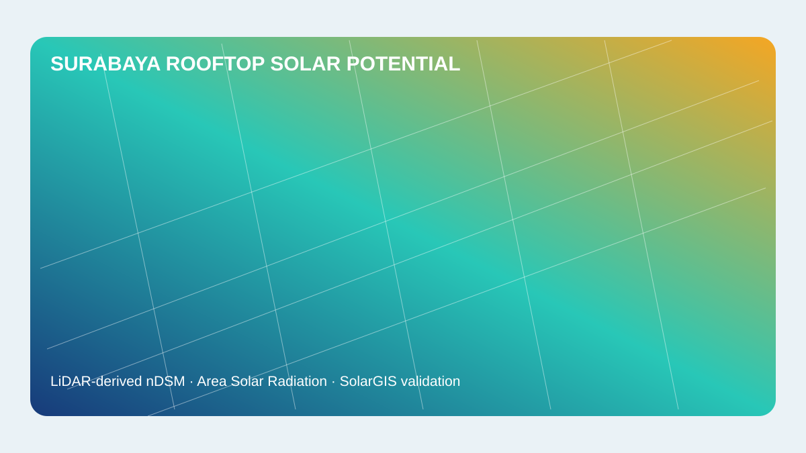
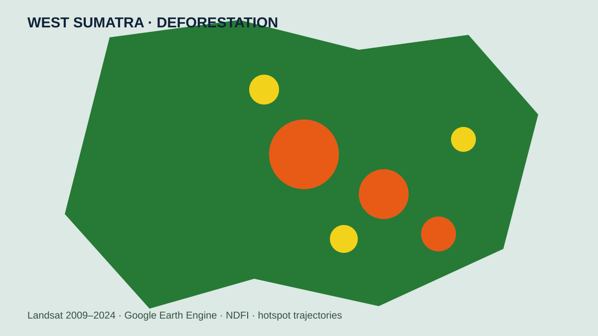
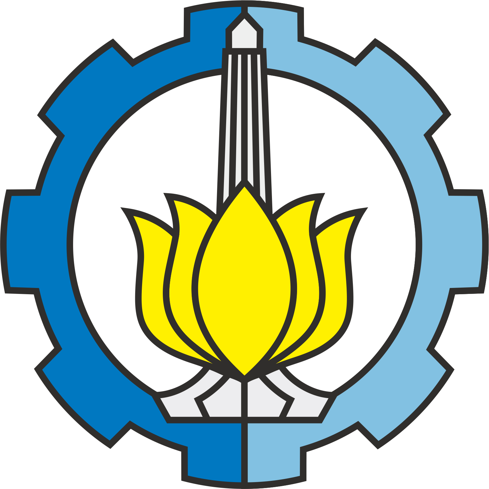
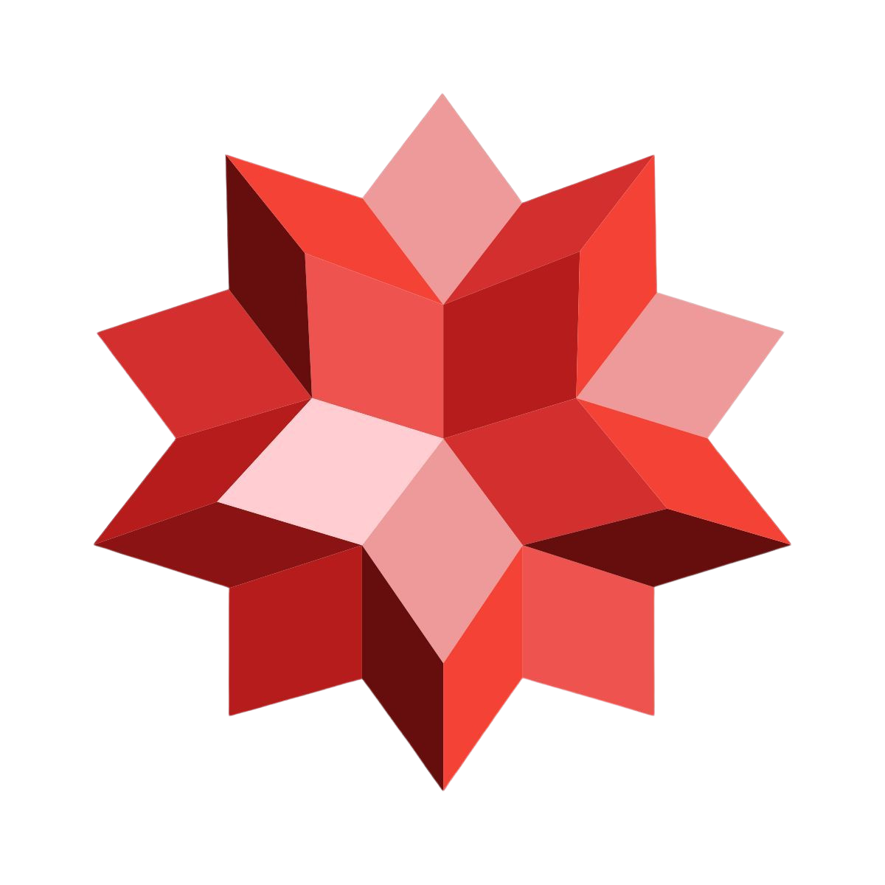

Surabaya · Renewable energy
Where could rooftop solar work best?
Estimating the solar energy potential of buildings across Surabaya using rooftop, height and sunlight data.
GIS · Remote Sensing · Urban Planning
Hello, I’m Hazidien Ramadhan Utomo — an Urban and Regional Planning graduate who turns location data into clear insights for cities, transport, energy and the environment.

I enjoy answering practical questions with spatial data.
Selected work
Explore mapping and analysis projects by topic. Each one starts with a real-world question, then explains the approach and what the map helps us understand.

Surabaya · Renewable energy
Estimating the solar energy potential of buildings across Surabaya using rooftop, height and sunlight data.

West Sumatra · Environment
Comparing satellite images over time to map forest loss, degradation and regrowth.

Surabaya · Transportation
Finding promising stop locations by examining access between buildings and campus areas.
Select a project to see its background, approach and links.
A little about me
I studied Urban and Regional Planning at Institut Teknologi Sepuluh Nopember (ITS). I like making technical information easier to understand and useful for planning decisions.
My work combines spatial analysis, remote sensing and planning knowledge. I have worked with large building datasets, satellite imagery, LiDAR-derived surfaces and transport networks to investigate patterns and compare locations.
I value clear communication: a map should not only look good, it should help someone understand a place and make a better-informed decision.
Connect on LinkedIn
Education · 2022–2026
Urban and Regional Planning · GPA 3.36 / 4.00
Experience
A selection of roles where I supported teaching, spatial analysis, research and field data collection.
Planning Analysis Methods · Surabaya
Supported students in mapping, statistics and spatial analysis exercises, including spatial patterns, clustering and relationships.
PT Greenova Daya Prima · Surabaya
Supported rooftop solar analysis, stakeholder discussions and survey checks covering 233 buildings.
British Embassy Jakarta · Surabaya
Collected travel-demand and traffic-count data and supported checks of traffic performance indicators.
Tools I use
A selection of software used across GIS, remote sensing, planning analysis and visualisation.
ArcGIS · ArcGIS Pro · QGIS · Global Mapper
Google Earth Engine · GeoSOS-FLUS · TerrSet · LiDAR
Python · ArcPy · SPSS · HEC-RAS
AutoCAD · SketchUp · WebGIS tools



Learning & training
Training that has supported my work with geospatial data, remote sensing, terrain and modelling.
Get in touch
I’m open to opportunities in GIS, spatial analysis, remote sensing, WebGIS and urban planning.